| Предпосылки | Изменения с схеме | Результаты | Наблюдения и выводы |
|---|---|---|---|
| Эксперимент № 1 Дата: 27 окт. 2026 | |||
| Собрать первую схему и посмотреть, есть ли генерация стокса с катушкой 10 км SMF. |

|
P1=116
P2=122 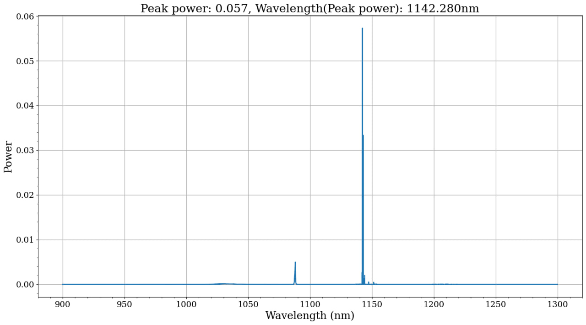 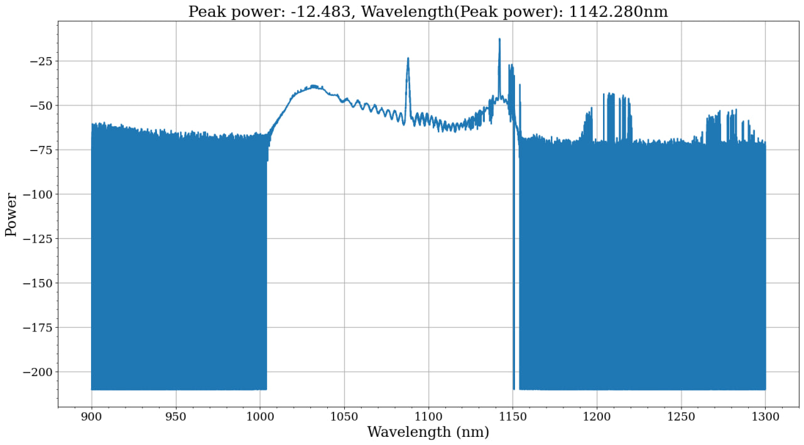 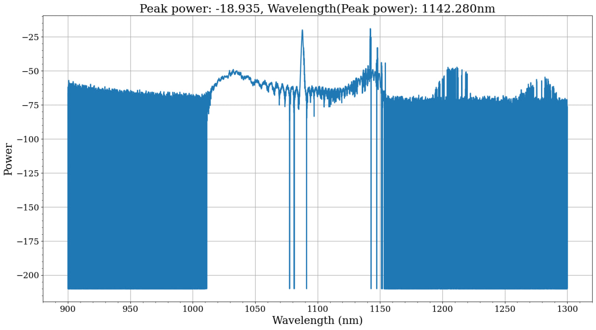 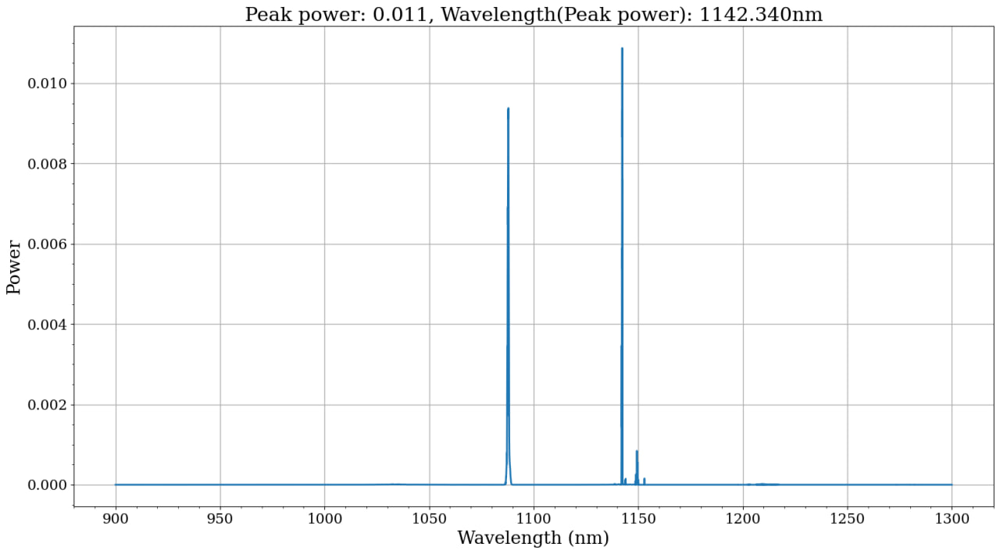 |
|
| Эксперимент № 2 Дата: 28 окт. 2026 | |||
| Посмотреть, что будет, если заменить катушку 10 км SMF на 650 м P₂O₅ (стокс ожидается около 1270 нм). |
Катушка 10 км заменена на P₂O₅ 650 м. Решётка только одна, 1087 на out1.

|
Мощности (мВт):
P1=46 P2=393 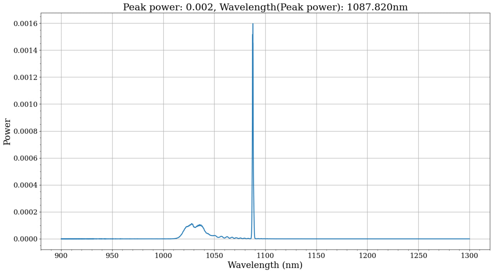 


|
|
| Эксперимент № 3 Дата: 28 окт. 2026 | |||
| Добавить вторую решётку (1270) как резонатор для стокса. |
Решётку 1270 приварили последовательно за решёткой 1087 на out1.

|
Мощности (мВт):
P1=25 P2=453 


|
|
| Эксперимент № 4 Дата: 28 окт. 2026 | |||
| Попробовать приварить решётку 1270 на втором выходе. |
Решётка 1087 осталась на out1, решётка 1270 переставлена на out2.
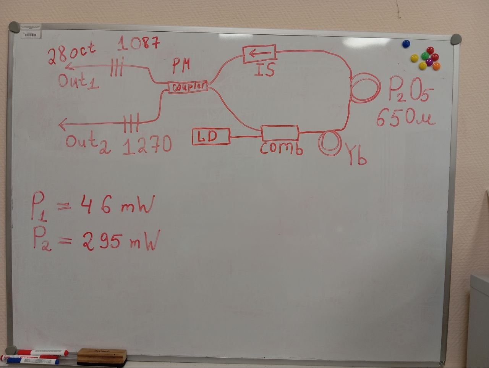 |
Мощности (мВт)
P1=46 P2=295 
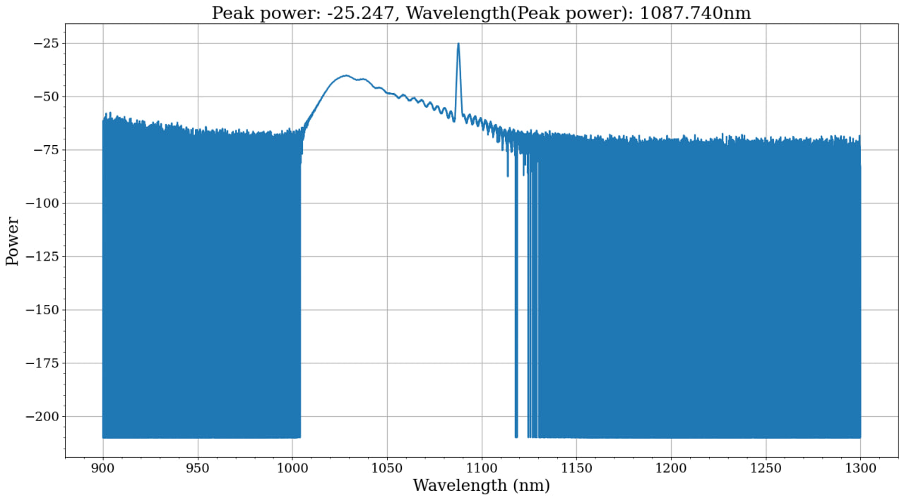 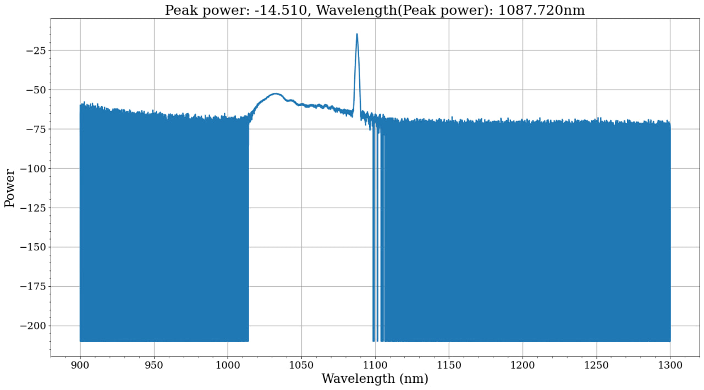 
|
|
| Эксперимент № 5 Дата: 28 окт. 2026 | |||
| Было предположение, что изолятор блокирует стокс, поэтому его убрали. |
Из схемы убран изолятор.

|
P1=58
P2=793 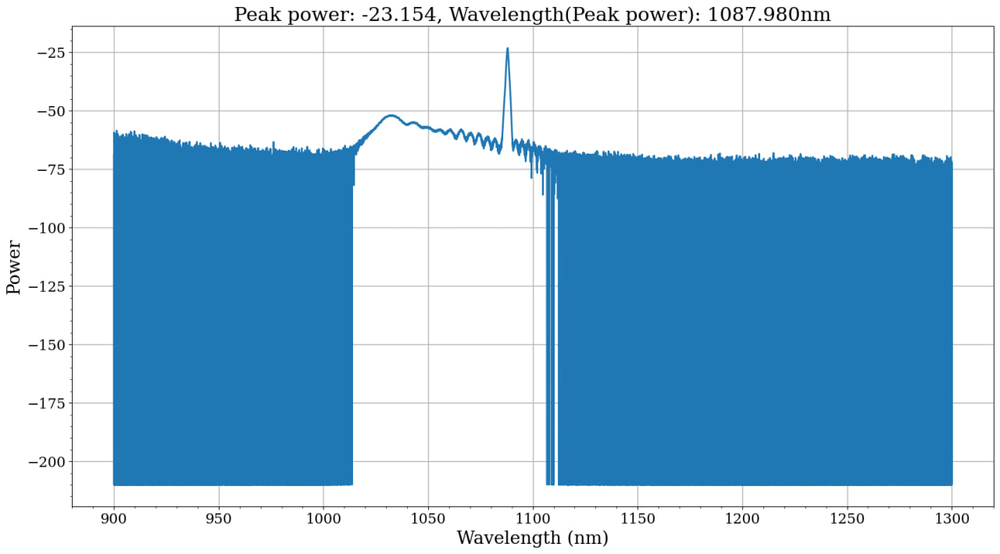 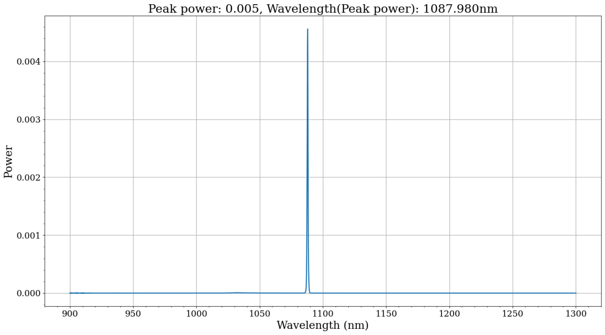 
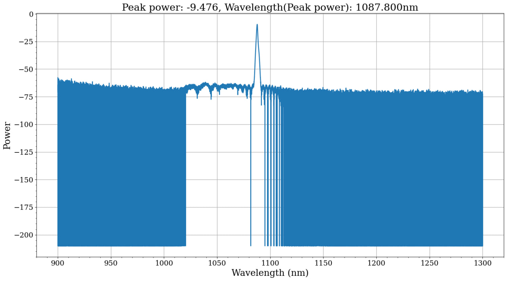 |
|
| Эксперимент № 6 Дата: 30 окт. 2026 | |||
| Проверить, не виноват ли лазерный диод. |
Заменили диод накачки на другой (из лазера 1080).

|
P1=59
P2=797 

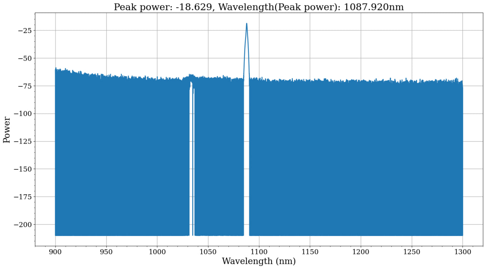 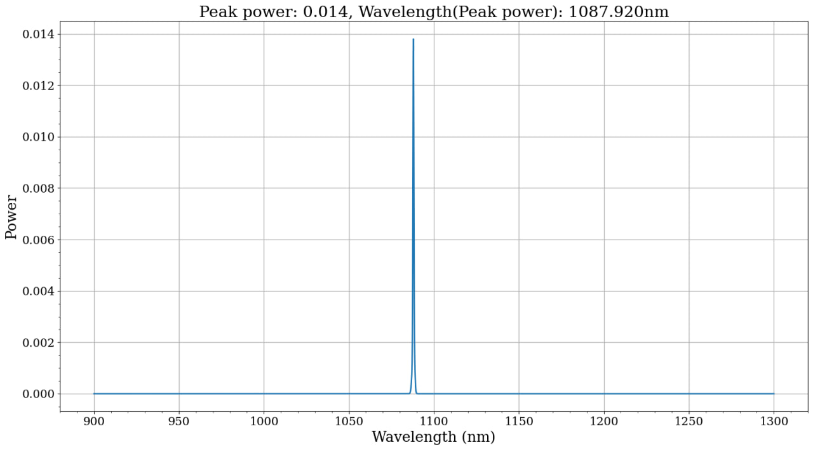 |
|
| Эксперимент № 7 Дата: 30 окт. 2026 | |||
| Вернуть изолятор на место. |
Изолятор снова в схеме.

|
P1=39
—
P2=426 Спектры не изменились. Они точно такие же как и в прошлом. |
Спектр не изменился, виден только пик 1087 нм, стокса нет. |
| Эксперимент № 8 Дата: 30 окт. 2026 | |||
| Было предположение, что решетка 1270 нерабочий. |
Решётку 1270 заменили на другую (решётка 1270 №3).

|
P1=40
—
P2=427 Спектры не изменились. Видно только 1088нм. |
|
| Эксперимент № 9 Дата: 9 нояб. 2026 | |||
| Убрать изолятор и проверить работу лазера. Перед этим полностью восстановили лазер для биологов (вернули родной диод и катушку), он работает как надо. |
Схема с каплером: изолятор убран, катушка P₂O₅ 650 м.
—
|
P1=45 мВт, P2=582 мВт.
—
|
|
| Эксперимент № 10 Дата: 10 нояб. 2026 | |||
| Проверить, как изолятор работает на длине волны 1261 нм, используя рабочий лазер для биологов. |
Взяли изолятор. Переварили SMF коннекторы с двух сторон. Включили лазер для биологов. Выбрали канал 1261нм. Сначала сняли просто спектр этого канала. Потом посветили изолятор с этим излучением с двух сторон: прямом направлении (in-out) и в обратном направлении (out-in).
—
|
P(без изолятора)=60 мВт, P(in-out)=8.1 мВт, P(out-in)=1.4 мВт. Гнули волокно перед изолятором, поляризацию крутили: разницы нет. После замены патч-корда и очистки коннекторов спектры и мощности те же.

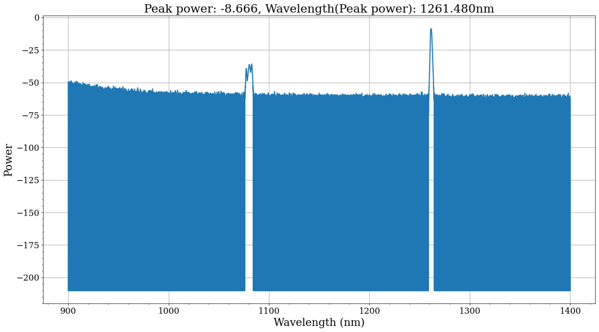 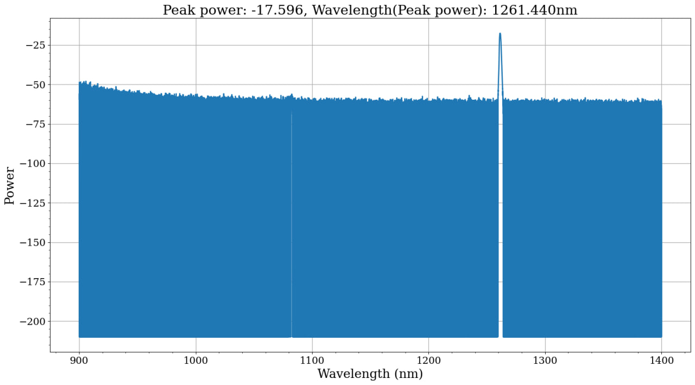 |
Изолятор на 1261 нм пропускает обратное излучение (1.4 мВт против 8.1 мВт в прямом направлении, то есть изоляция всего ~7–8 дБ). В прямом направлении потери большие (60 → 8.1 мВт). |
| Эксперимент № 11 Дата: 16 нояб. 2026 | |||
| — |
Посмотрели спектры и осциллограммы. Потом на out1 сварили SMF-каплер 90/10, через коннектор соединили новый каплер с out2.
—
|
В районе 1270 нм виден очень маленький пик.
—
|
Возможные причины:
|